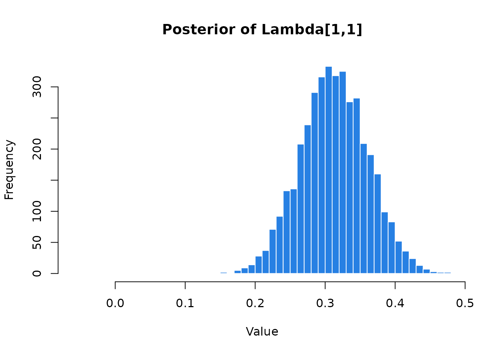

Introduction
BayesianEFA provides a robust and intuitive framework
for Bayesian Exploratory Factor Analysis using Stan.
- Unconstraint Estimation: Fit unrestricted loading matrices without fixing parameters or using arbitrary identification constraints.
- Resolved Rotational Indeterminacy: Recover interpretable posteriors through the Efficient Rotation-Sign-Permutation (E-RSP) alignment algorithm.
- Bayesian SEM Fit Measures: Includes the Bayesian SEM fit indices proposed by Garnier-Villarreal & Jorgensen (2020) for model evaluation.
- Full Posterior Inference: Obtain complete distributions for all quantities, including factor loadings, factor scores, fit measures, and reliability indices.
- FIML for Missing Data: Handles incomplete datasets via Full Information Maximum Likelihood (FIML).
- Inherent Robustness: Naturally resolves common frequentist issues, such as Heywood cases and non-positive definite matrices, ensuring stable estimation.
While the package supports both rstan and
cmdstanr, rstan is used as the default
backend. However, we strongly recommend using cmdstanr for
users who prefer the latest Stan features and faster estimation,
cmdstanr can be installed by following the official
guide.
Note: The
BayesianEFAmodel compiles only once when first usingcmdstanr.It is permanently saved in your system’s cache and will persist across R sessions and computer reboots. If you ever need to force a recompile (e.g., after updatingcmdstanr), you must manually clear the cache by running:unlink(tools::R_user_dir("BayesianEFA", which = "cache"), recursive = TRUE).
Basic example using BayesianEFA
The following workflow fits a 3-factor model using the
befa() function, handling estimation, rotation, and
post-processing in a single step:
library(BayesianEFA)
# Fit Bayesian EFA model
befa_fit <- befa(
data = HS_data, # Data
n_factors = 3, # Nº of latent factors
model = "cor", # Model the correlation matrix
lambda_prior = "unit_vector", # Unit-vector prior (Rey-Sáez et al., 2025)
rotate = "varimax", # Automatic Varimax + E-RSP Alignment
backend = "rstan", # Estimation backend, also "cmdstanr"
factor_scores = TRUE, # Compute Bayesian factor scores
compute_fit_indices = TRUE, # Compute Bayesian SEM fit indices
compute_reliability = TRUE, # Compute reliability indices
iter_sampling = 1000, # Sampling iterations
iter_warmup = 1000, # Warmup iterations
chains = 4, # 4 MCMC chains
parallel_chains = 1, # no parallel chains
seed = 17 # seed for reproducible results
)The befa_fit object contains a standard
stanfit object (from rstan). This ensures full
compatibility with the Stan ecosystem, allowing you to use your favorite
diagnostic tools and plots – regardless of whether you used
cmdstanr or rstan as the backend.
Basic model summaries
The summary() method provides reportable tables inspired
by the psych package, ensuring a familiar experience for
EFA researchers. We can use two arguments for the output:
-
cutoff: Hides loadings below a specific threshold (e.g., 0.3) for a cleaner pattern matrix. -
signif_stars: Adds an asterisk (*) to loadings whose 95% Credible Interval excludes zero.
summary(befa_fit, cutoff = 0.3, signif_stars = TRUE)
#>
#> Table 1. Factor Loadings (Pattern Matrix)
#> ‗‗‗‗‗‗‗‗‗‗‗‗‗‗‗‗‗‗‗‗‗‗‗‗‗‗‗‗‗‗‗‗‗‗‗‗‗‗‗‗‗‗‗‗‗‗‗‗‗‗‗‗‗‗‗‗‗‗‗‗‗‗‗‗‗‗‗
#> Variable F1 F2 F3 h2 u2 Rhat EssBulk EssTail
#> ———————————————————————————————————————————————————————————————————
#> Item_1 0.31* 0.60* 0.47 0.53 1.00 4337 2901
#> Item_2 0.46* 0.23 0.77 1.00 3848 2652
#> Item_3 0.65* 0.44 0.56 1.00 3922 2761
#> Item_4 0.83* 0.71 0.29 1.00 3942 3048
#> Item_5 0.86* 0.75 0.25 1.00 4004 2826
#> Item_6 0.81* 0.68 0.32 1.00 3971 2992
#> Item_7 0.68* 0.48 0.52 1.00 3423 2328
#> Item_8 0.69* 0.52 0.48 1.00 3061 2170
#> Item_9 0.40* 0.49* 0.43 0.57 1.00 3646 3020
#> ‗‗‗‗‗‗‗‗‗‗‗‗‗‗‗‗‗‗‗‗‗‗‗‗‗‗‗‗‗‗‗‗‗‗‗‗‗‗‗‗‗‗‗‗‗‗‗‗‗‗‗‗‗‗‗‗‗‗‗‗‗‗‗‗‗‗‗
#> Note: varimax rotation applied. Diagnostics show worst-case values
#> across factors (max Rhat, min ESS). The 3 latent factors accounted
#> for 52.2% of total variance. (*) 95% Credible Interval excludes 0.
#> Loadings with absolute values < 0.30 are hidden.
#>
#> Table 2. Bayesian Fit Measures
#> ‗‗‗‗‗‗‗‗‗‗‗‗‗‗‗‗‗‗‗‗‗‗‗‗‗‗‗‗‗‗‗‗‗‗‗‗‗‗‗‗‗‗‗‗‗‗‗‗‗
#> Index Estimate SD CI_Low CI_High
#> —————————————————————————————————————————————————
#> Chi2 47.44 7.05 35.60 63.66
#> Chi2_ppp 0.11
#> Chi2_Null 918.85 0.00 918.85 918.85
#> BRMSEA 0.06 0.02 0.00 0.09
#> BGamma 0.99 0.01 0.98 1.00
#> Adj_BGamma 0.97 0.02 0.93 1.00
#> BMc 0.98 0.01 0.96 1.00
#> SRMR 0.05 0.01 0.03 0.06
#> BCFI 0.99 0.01 0.97 1.00
#> BTLI 0.99 0.02 0.93 1.00
#> ELPD -3416.62 42.50 -3499.91 -3333.32
#> LOOIC 6833.23 85.00 6666.64 6999.82
#> p_loo 25.29 1.78 21.81 28.77
#> ‗‗‗‗‗‗‗‗‗‗‗‗‗‗‗‗‗‗‗‗‗‗‗‗‗‗‗‗‗‗‗‗‗‗‗‗‗‗‗‗‗‗‗‗‗‗‗‗‗
#> Note: Intervals are 95% Credible Intervals. PPP:
#> Posterior Predictive p-value (Ideal > .05).
#> p_loo/LOOIC derived from PSIS-LOO.
#>
#> Table 3. Factor Reliability (Coefficient Omega)
#> ‗‗‗‗‗‗‗‗‗‗‗‗‗‗‗‗‗‗‗‗‗‗‗‗‗‗‗‗‗‗‗‗‗‗‗‗‗‗‗‗‗
#> Factor Estimate SD CI_Low CI_High
#> —————————————————————————————————————————
#> F1 0.73 0.02 0.69 0.76
#> F2 0.60 0.04 0.52 0.67
#> F3 0.55 0.04 0.45 0.62
#> ‗‗‗‗‗‗‗‗‗‗‗‗‗‗‗‗‗‗‗‗‗‗‗‗‗‗‗‗‗‗‗‗‗‗‗‗‗‗‗‗‗
#> Full Scale Omega Total: 0.84 [0.82,
#> 0.86]. Omega coefficients use the full
#> posterior distribution.Extract and summarise posterior draws
For deeper inspection, BayesianEFA provides tools to
extract raw MCMC draws or compute detailed diagnostics:
-
extract_posterior_draws(): Returns raw MCMC samples for any parameter. This is ideal for custom visualizations or density plots. -
posterior_summaries(): A convenient wrapper that computes descriptive statistics and essential convergence diagnostics (e.g., \(\hat{R}\) and Effective Sample Size).
# 1. Extract raw draws for factor loadings
draws <- extract_posterior_draws(befa_fit, pars = "Lambda", format = "matrix")
# Visualize the posterior distribution of a specific loading
hist(draws[, "Lambda[1,1]"],
breaks = 50,
col = "#2780e3",
border = "white",
main = "Posterior of Lambda[1,1]",
xlab = "Value"
)
# 2. Get automated summaries and diagnostics
posterior_summaries(befa_fit, pars = "h2")
#> # A tibble: 9 × 10
#> variable mean median sd mad q5 q95 rhat ess_bulk ess_tail
#> <chr> <dbl> <dbl> <dbl> <dbl> <dbl> <dbl> <dbl> <dbl> <dbl>
#> 1 h2[1] 0.478 0.477 0.0632 0.0639 0.376 0.580 1.00 4911. 2857.
#> 2 h2[2] 0.240 0.238 0.0585 0.0580 0.147 0.339 1.00 5304. 2533.
#> 3 h2[3] 0.445 0.443 0.0781 0.0763 0.323 0.576 1.00 5165. 2858.
#> 4 h2[4] 0.715 0.717 0.0370 0.0375 0.654 0.775 1.00 4903. 2884.
#> 5 h2[5] 0.751 0.752 0.0388 0.0381 0.686 0.813 1.00 4882. 2845.
#> 6 h2[6] 0.687 0.689 0.0360 0.0365 0.627 0.743 1.00 5523. 2712.
#> 7 h2[7] 0.488 0.482 0.103 0.0987 0.333 0.661 1.00 3448. 2303.
#> 8 h2[8] 0.527 0.520 0.0886 0.0851 0.394 0.680 1.00 3083. 2138.
#> 9 h2[9] 0.441 0.441 0.0577 0.0572 0.344 0.534 1.00 5326. 2556.References
- Garnier-Villarreal, M., & Jorgensen, T. D. (2020). Adapting fit indices for Bayesian structural equation modeling: Comparison to maximum likelihood. Psychological methods, 25(1), 46-70. https://doi.org/10.1037/met0000224
- Holzinger, K. J., and F. A. Swineford. 1939. A Study of Factor Analysis: The Stability of a Bi-Factor Solution. Supplementary Educational Monograph 48. Chicago: University of Chicago Press.
- McDonald, R. P. (1999). Test Theory: A Unified Treatment. Lawrence Erlbaum Associates.
- Rey-Sáez, R., Franco-Martínez, A., Revuelta, J., & Vadillo, M. A. (2025). A Unified Framework for Psychometrics in Experimental Psychology: The Standardized Generalized Hierarchical Factor Model. PsyArXiv. https://doi.org/10.31234/osf.io/gv6k7_v1
- Rey-Sáez, R. & Revuelta, J. (2026). An Efficient Rotation-Sign-Permutation Algorithm to Solve Rotational Indeterminacy in Bayesian Exploratory Factor Analysis. PsyArXiv. https://doi.org/10.31234/osf.io/6drsw_v1